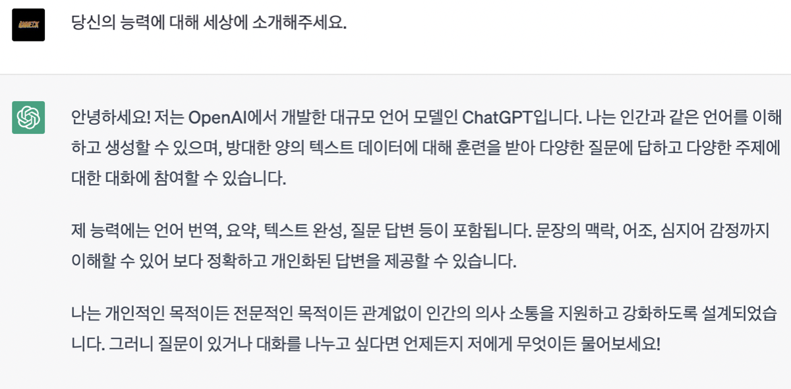
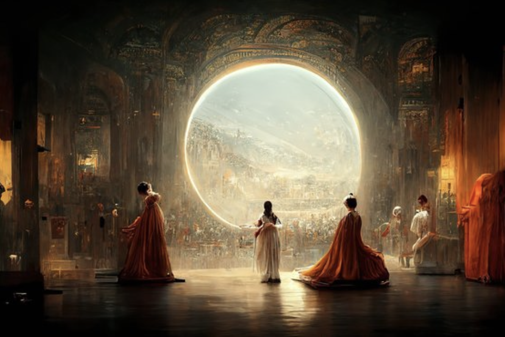

현대 사회에서 활용되고 있는 인공지능의 사례
1. Chat GPT

[chat GPT에게 자신을 소개해달라고 요구했다]
2. 미술 분야
인간만의 영역이라고 여겨져왔던 미술의 분야에도 인공지능이 침범하기 시작했다.

[인공지능 화가의 미술 대회 우승 작품]
3. 음악 분야
[youtube] AI한테 작곡을 시켜보았더니?ㅋㅋㅋㅋㅋ
[youtube] 칸예와 드레이크가 부르는 WAP
인공지능을 이용하여 사람의 목소리를 학습해 그 사람이 노래를 부르는 것처럼 만드는 기술이
발전하고 있으며 작곡 분야 또한 위협을 받고 있다.